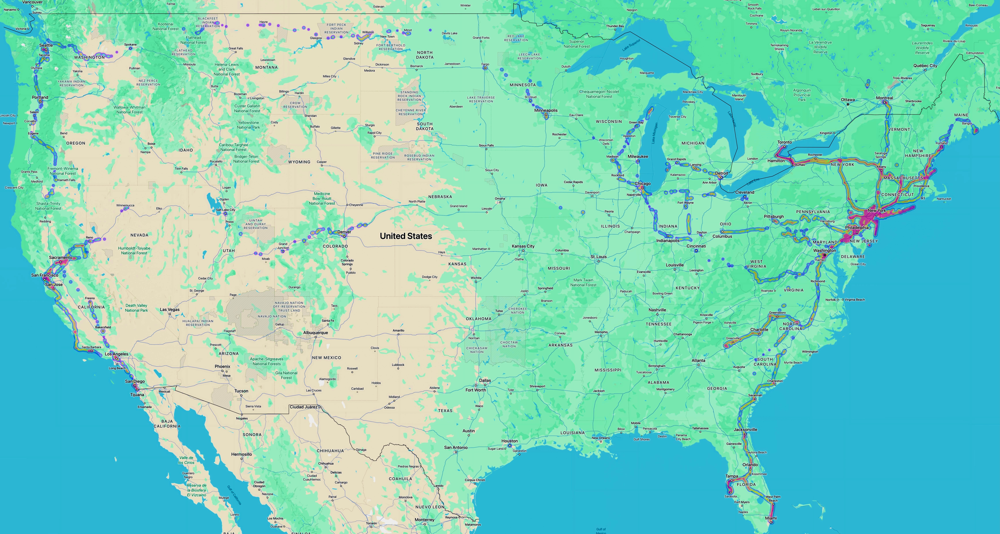

Home
Research
Publications
Teaching/TAing
Pictures
Other work
Food Delivery
Photo Map
|
|
|
- Consists of stitched-together photo map screenshots from Google Photos on iPad
- AutoStitch program used to stitch together photo maps corresponding to smaller regions
- Pictures (mostly) from 2013 and after...didn't take many pictures using a device that supports geo-tagging before then
- Pictures (mostly) taken using Nikon V1 w/ GPS attachment, Sony Action Cam, GoPro Hero 7, GoPro Hero 10, and Galaxy S3, S5, and S8+ phones
- Light and color of photo map adjusted using Mac Photos program
 |
|